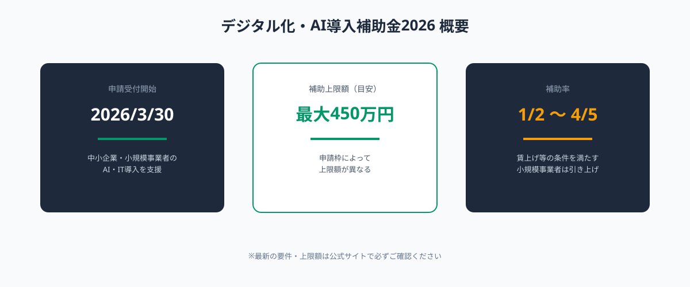
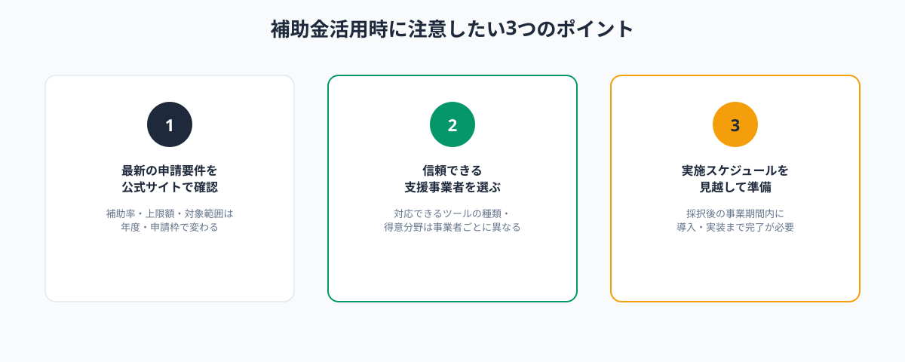

2026年に申請受付が始まった「デジタル化・AI導入補助金2026」は、これまでの「IT導入補助金」を引き継ぐ形でリニューアルされた制度です。中小企業・小規模事業者のAI・ITツール導入を後押しする内容になっており、AI導入を検討している企業にとって活用を検討する価値のある制度です。
この記事では、制度の概要と、補助金とスポット外注を組み合わせてAI導入コストを抑える考え方を解説します。なお、本記事は制度の情報提供を目的としたものであり、申請手続きそのものはANKENが代行するものではありません。申請には登録された支援事業者の協力が必要になる点を踏まえて読み進めてください。
デジタル化・AI導入補助金2026とは
デジタル化・AI導入補助金2026は、2026年3月30日に申請受付が開始された制度で、中小企業・小規模事業者がAI・ITツールを導入する際の費用の一部を補助するものです。補助上限額は申請枠によって異なりますが、最大450万円程度まで支援される枠が設けられており、補助率は基本2分の1、賃上げ等の条件を満たす小規模事業者では最大5分の4まで引き上げられる場合があります。

制度の詳細・最新の申請要件は今後変更される可能性があるため、申請を検討する際は必ず公式サイトの最新情報を確認してください。
補助金の対象となるAI導入の範囲
補助対象となるのは、業務効率化につながるITツール・AIツールの導入費用です。既存のソフトウェアパッケージの導入費だけでなく、自社の業務フローに合わせたカスタム開発・実装に関する費用が対象範囲に含まれる枠も用意されています。
具体的には、社内ナレッジ検索AIの構築、議事録・文書作成の自動化ツール、見積書・請求書処理の自動化ツールなど、これまでANKENで紹介してきたようなスポット外注によるAI導入の多くが、制度上は対象範囲に該当する可能性があります。対象範囲は申請枠・年度によって変わるため、実際の適用可否は支援事業者・公式サイトでの確認が必要です。
申請の流れと「支援事業者」の役割
この補助金制度で必ず理解しておきたいのが、申請は事業者が単独で行うのではなく、経済産業省（事務局）に登録された「支援事業者」を通じて行うという点です。支援事業者は、ITツールの提供企業やコンサルティング会社などが事務局の審査を受けて登録されており、申請者は支援事業者と協力しながら申請書類を作成します。
- 導入したいAI・ITツールの内容を整理する
- 登録された支援事業者を選定し、申請の相談をする
- 支援事業者と協力して申請書類を作成・提出する
- 審査・採択後、ツール導入・実装を進める
- 事業実施後、実績報告を行い補助金が交付される
ANKEN自体は支援事業者としての登録機関ではないため、補助金の申請手続き自体を代行することはできません。後述するように、補助金の活用先（ツール導入）とスポット外注（カスタム実装）を役割分担して考えることが、この制度を上手に使うポイントになります。
補助金とスポット外注を組み合わせる考え方
補助金は「ツールの導入費用」を主な対象とする一方、「自社の業務フローに合わせて使いこなすためのカスタマイズ」は別途必要になるケースが多くあります。汎用ツールを導入しただけでは現場に定着せず、結局使われないまま終わってしまう、という声も少なくありません。
そこで有効なのが、「補助金でツール導入費用をまかない、自社向けのカスタム実装・運用設計はスポット外注で別途依頼する」という組み合わせです。補助金の対象範囲にカスタム開発費が含まれる枠であれば、支援事業者に相談のうえ、スポット発注先の実装費用を補助対象に組み込める可能性もあります。対象に含まれない場合でも、補助金で浮いた予算をカスタム実装の費用に充てるという考え方は十分に有効です。
補助金活用時に注意したい3つのポイント

補助金活用を検討する際は、次の3点を確認しておくと進めやすくなります。
1つ目は、最新の申請要件を公式サイトで必ず確認することです。補助上限額・補助率・対象範囲は年度や申請枠によって変わるため、本記事の内容だけで判断せず、申請時点の最新情報を確認してください。
2つ目は、信頼できる支援事業者を選ぶことです。支援事業者によって対応できるツールの種類や得意分野が異なるため、自社が導入したい内容に合った支援事業者を選ぶことが重要です。
3つ目は、採択後の実施スケジュールを見越して準備しておくことです。採択されてから事業期間内にツール導入・実装まで完了させる必要があるため、スポット外注先への相談も早めに動き出しておくと安心です。
まとめ・ANKENへのご相談
デジタル化・AI導入補助金2026は、中小企業のAI導入を後押しする制度ですが、申請には登録された支援事業者の協力が必要という点を理解しておくことが大切です。補助金でツール導入費用をまかないながら、自社の業務フローに合わせたカスタム実装はスポット外注で進める、という組み合わせ方が現実的な活用方法です。
ANKENでは補助金の申請代行は行っていませんが、「補助金活用後、または並行して、自社向けのAI実装をどう進めるか」というご相談には対応しています。固定費ゼロ・週末スポットから、AI導入の実装部分をサポートします。
補助金活用と並行したご相談も歓迎します。固定費ゼロ・週末スポットから依頼可能です。
👉 無料でスポット依頼を相談する初回相談は無料です。要件が固まっていなくてもOKです。